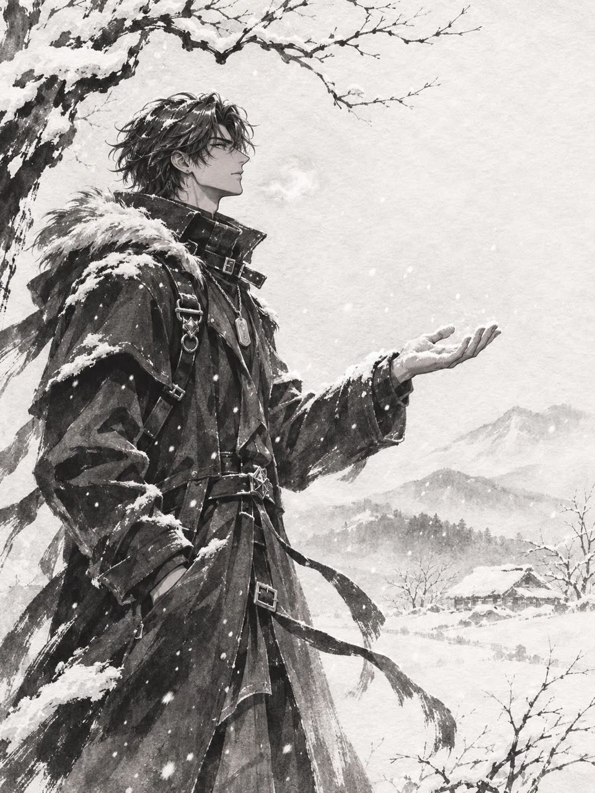

Sumi-e winter solitude: black-and-white ink-wash side profile catching snowflakes, a structured mood-board prompt (model unknown)
MOO-104Moodunknownby @SonicElkOG2026-11-25

A long, sectioned image prompt for a traditional Japanese ink painting: one adult figure in a heavy winter coat in side profile, hand out to catch snow, mountains and a farmhouse dissolving into washi paper. It bans modern gradients and photoreal rendering and spells out composition (knees-up, side profile) and brushwork. Six variations show the template holds. Good key art for a winter, tea or outerwear campaign.
Prompt
❄️ CINEMATIC JAPANESE INK PAINTING — “THE SILENCE OF WINTER” Traditional Japanese Sumi-e Painting | Black & White Ink Wash | Cinematic Side Profile | Personalized Winter Coat | Falling Snow | Melancholic Serenity | Atmospheric Minimalism | Ultra-Detailed | Vertical 3:4 Create ONE breathtaking, cinematic, beautifully detailed traditional Japanese black-and-white ink painting featuring EXACTLY ONE clearly adult model standing peacefully outside during a gentle snowfall, gazing into the distant winter landscape while extending one hand outward to catch the falling snowflakes. The artwork must evoke profound solitude, quiet contemplation, inner peace, and the haunting beauty of winter, resembling a traditional Japanese Sumi-e masterpiece. 🖤 MODEL IDENTITY — STRICT PRESERVATION Preserve the model's original facial features, hairstyle, body proportions, and gender presentation. Maintain all recognizable characteristics, including horns, antlers, ears, tails, wings, and accessories, if applicable. Preserve the model's original personality, fashion aesthetic, and visual identity. Translate the model's original appearance into beautiful monochromatic ink shading without losing their recognizable design. Do not replace the model with a generic character. 🧥 PERSONALIZED WINTER COAT An elegant, thick winter coat personally designed around the model's original outfit and aesthetic. Beautifully layered winter fabrics with detailed stitching, soft fur lining, and expressive ink-painted folds. Original clothing motifs and signature accessories incorporated naturally into the winter attire. The coat is fully closed, providing warmth against the cold winter atmosphere. The coat's fabric moves gently in the passing winter breeze. Render all materials through rich black ink, delicate gray washes, and soft white highlights. ❄️ POSE & EXPRESSION — THE WINTER GAZE A perfect cinematic side-profile view of the model. The model stands naturally upright, peacefully looking into the far distance rather than toward the camera. One arm extends gently forward with the palm facing upward, catching delicate falling snowflakes. The opposite arm rests naturally beside the body or inside the coat pocket. The model's expression is calm, thoughtful, and slightly melancholic. Delicate snowflakes accumulate upon the model's hair, shoulders, coat, and extended hand. A faint cloud of visible breath escapes into the freezing winter air. 🏔️ ENVIRONMENT — THE SILENT WINTER LANDSCAPE A peaceful, snow-covered Japanese countryside. Distant mountains gradually disappearing into soft white winter mist. Bare trees illustrated with elegant, expressive black ink brushstrokes. Snow-covered branches framing the edges of the composition. Gentle snowfall throughout the foreground and background, creating cinematic depth. Vast areas of untouched white negative space emphasizing solitude and tranquility. A distant winter horizon that the model quietly observes. 🖌️ ART STYLE — TRADITIONAL JAPANESE SUMI-E Strictly black, white, and grayscale monochromatic palette. Traditional Japanese ink-wash painting techniques. Authentic textured Japanese washi paper. Expressive calligraphic brushstrokes. Delicate dry-brush textures and softly bleeding ink. Deep, saturated black shadows contrasted against untouched white snow. Intricate character detailing blended with an abstract, minimalist environment. Beautiful imperfections characteristic of handcrafted Japanese paintings. No modern digital gradients, vibrant colors, or photorealistic rendering. 🎥 CINEMATIC COMPOSITION & LIGHTING Medium-wide side-profile composition, capturing the model from the knees upward. The extended hand and falling snowflakes are clearly visible. Position the model slightly off-center, leaving expansive negative space in the direction of their gaze. Soft, diffused winter lighting. Atmospheric mist and layered environmental depth. Elegant contrast between the model's dark silhouette and the pale snowy landscape. A timeless, emotionally powerful composition resembling a museum-quality Japanese ink painting. ⚠️ STRICT ANATOMY & QUALITY CONTROL EXACTLY ONE clearly adult model. Anatomically correct body proportions. Two arms, two hands, and five fingers per hand. Natural extended-hand positioning. No duplicated limbs or distorted fingers. No altered character identity. No additional characters. No text, signatures, logos, borders, or watermarks. Pure black-and-white artwork. Final atmosphere: A solitary figure standing between the silence of the earth and the falling snow of the heavens, reaching outward to capture a fleeting moment of winter's beauty — peaceful, poetic, melancholic, and timeless. and the other hand is in the pocket of the coat
Tags: sumi-e, ink wash, black and white, winter, solitude, side profile, washi paper, key art